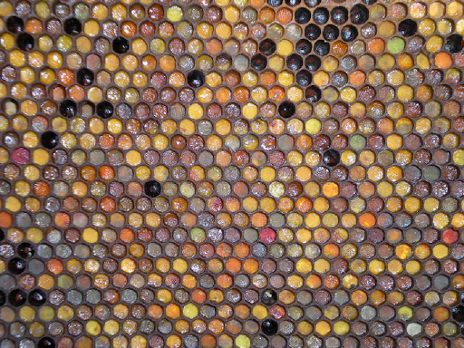
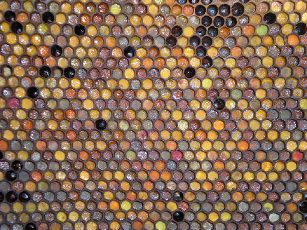
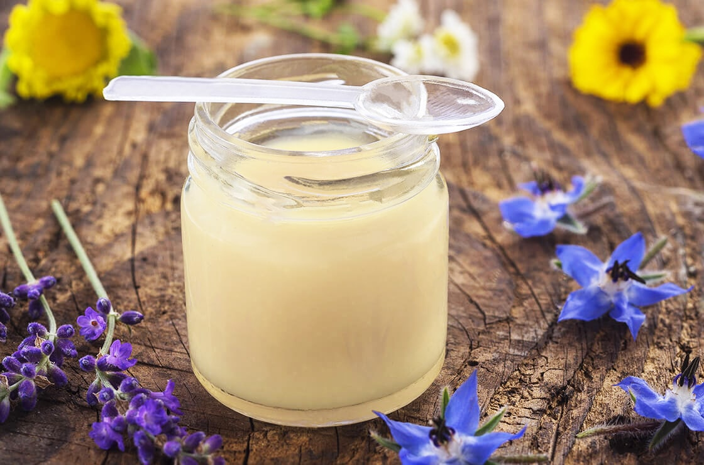
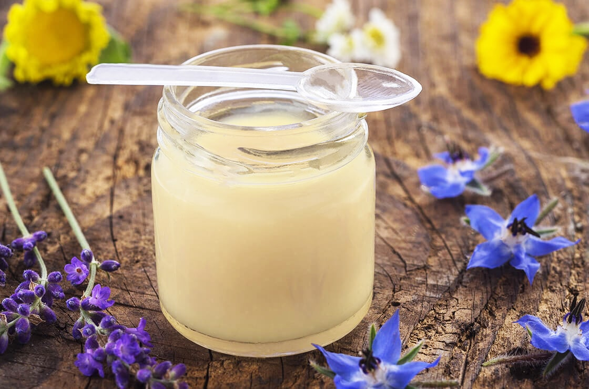

Le miel est bien évidemment le produit de la ruche le plus connu. Il est indispensable aux abeilles car il est leur source d'énergie. Les hommes l'ont utilisé depuis la nuit des temps car il a longtemps été l'unique aliment sucré; on l'utilise dans la cuisine mais aussi en médecine car c'est un antiseptique naturel.


Des "chasseurs de miel" existent toujours au Népal

 

 
